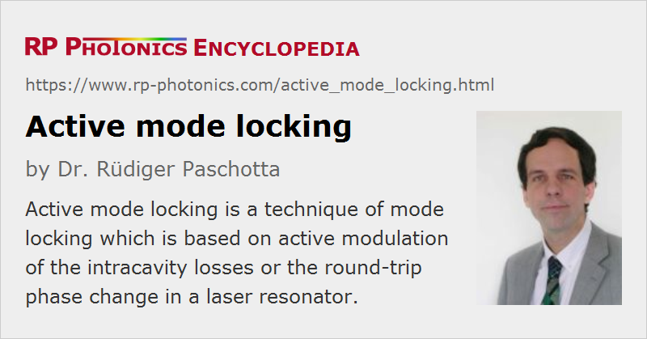

Active Mode Locking
Definition: a technique of mode locking, based on active modulation of the intracavity losses or the round-trip phase change
More general term: mode locking
Opposite term: passive mode locking
German: aktives Modenkoppeln
Categories: lasers, light pulses, methods
How to cite the article; suggest additional literature
Author: Dr. Rüdiger Paschotta
The general aspects of the generation of ultrashort pulses by mode locking are discussed in the article on mode locking. This article addresses active mode locking, which involves the periodic modulation of the resonator losses or of the round-trip phase change. This can be achieved e.g. with an acousto-optic or electro-optic modulator, a Mach–Zehnder integrated-optic modulator, or a semiconductor electroabsorption modulator. If the modulation is synchronized with the resonator round trips, this leads to the generation of ultrashort pulses.
The principle of active mode locking by modulating the resonator losses (AM mode locking) is easy to understand. The action of the modulator has two different important effects:
- A pulse with the “correct” timing can pass the modulator at times where the losses are at a minimum (see Figure 2). It is thus favored against any other radiation circulating in the resonator. As the pulse will in the steady state saturate the laser gain such that its round-trip gain is zero, other circulating radiation will have a negative round-trip gain and will thus die out sooner or later.
- Still, the wings of the pulse experience a little attenuation, which effectively leads to (slight) pulse shortening in each round trip: The round-trip gain is slightly negative for the wings and slightly positive for the pulse center. As a result, the pulses get shorter and shorter, until the pulse shortening is offset by other effects (e.g. gain narrowing or chromatic dispersion) which tend to broaden the pulse.
In simple cases, the pulse duration achieved in the steady state can be calculated with the Kuizenga–Siegman theory; it simply results from the balance of pulse shortening in the modulator with pulse broadening by gain narrowing. The pulse duration is typically in the picosecond range and is only weakly dependent on parameters such as the strength of the modulator signal. This weak dependence arises from the fact that the pulse-shortening effect of the modulator rapidly becomes less effective for shorter pulse durations, whereas other effects which lengthen the pulse (e.g. gain narrowing and chromatic dispersion) then become more effective.
Frequency Modulation Mode Locking
Somewhat less obviously, active mode locking also works with a periodic phase modulation (instead of amplitude modulation) e.g. in a Pockels cell, even though this leads to chirped pulses. This technique is called FM mode locking (FM = frequency modulation), although the term phase modulation mode locking would seem to be more appropriate. Some FM mode-locked lasers exhibit an instability: they exhibit random hopping between two operation modes, where the pulses pass the modulator at times where either a minimum or a maximum of the phase delay is reached. This kind of bistability is sometimes removed by dispersive and nonlinear effects.
Synchronization; Regenerative Feedback Method
For stable operation, the round-trip time of the resonator must fairly precisely match the period of the modulator signal (or some integer multiple of it), so that a circulating pulse can always pass the modulator at a time with minimum losses. Even a small frequency mismatch between the laser resonator and the drive signal can lead to a strong timing jitter or even to chaotic behavior, since the obtained “pulling force” on the pulse timing is quite weak.
Synchronization between the modulator driver and the laser can be achieved either by careful adjustment of a stable laser setup, or by means of a feedback circuit which automatically adjusts either the modulation frequency or the length of the laser resonator (and thus its round-trip time). A frequently used technique is regenerative mode locking (also called mode locking with regenerative feedback) [5]. Here, the modulator signal is not generated by a free-running or slightly corrected electronic oscillator, but rather is derived from the detected intensity modulation of the pulse train itself. Such schemes are particularly important for achieving tunable pulse repetition rates, and are often applied to mode-locked fiber lasers and laser diodes.
Active Mode Locking with Higher Pulse Repetition Frequencies
Due to geometric constraints, it can be difficult to reach very high pulse repetition rates by making the laser resonator very short. A solution can be harmonic mode locking, where multiple pulses circulate in the laser resonator. The modulator frequency is then an integer multiple of the round-trip frequency. A variation of the method is rational harmonic mode locking, where the modulation frequency is the round-trip frequency times the ratio of two integers.
Comparison with Passive Mode Locking
Compared with passive mode locking, active mode locking typically generates longer pulses. A disadvantage is the need for an optical modulator, the electronic driver and (in most cases) means for synchronization (see above). On the other hand, active mode locking can be the natural solution when pulse trains are required which are synchronized with some electronic signal, or when many lasers need to be operated in synchronism. Therefore, active mode locking is often used in the context of optical fiber communications.
Questions and Comments from Users
Here you can submit questions and comments. As far as they get accepted by the author, they will appear above this paragraph together with the author’s answer. The author will decide on acceptance based on certain criteria. Essentially, the issue must be of sufficiently broad interest.
Please do not enter personal data here; we would otherwise delete it soon. (See also our privacy declaration.) If you wish to receive personal feedback or consultancy from the author, please contact him e.g. via e-mail.
By submitting the information, you give your consent to the potential publication of your inputs on our website according to our rules. (If you later retract your consent, we will delete those inputs.) As your inputs are first reviewed by the author, they may be published with some delay.
Bibliography
| [1] | L. E. Hargrove, R. L. Fork, and M. A. Pollack, “Locking of He–Ne laser modes induced by synchronous intracavity modulation”, Appl. Phys. Lett. 5, 4 (1964), doi:10.1063/1.1754025 (first report of active mode locking) |
| [2] | M. DiDomenico, “Small-signal analysis of internal (coupling type) modulation of lasers”, J. Appl. Phys. 35 (10), 2870 (1964), doi:10.1063/1.1713121 |
| [3] | M. H. Crowell, “Characteristics of mode-coupled lasers”, IEEE J. Quantum Electron. 1 (1), 12 (1965), doi:10.1109/JQE.1965.1072174 |
| [4] | A. Yariv, “Internal modulation in multimode laser oscillators”, J. Appl. Phys. 36 (2), 388 (1965), doi:10.1063/1.1713999 |
| [5] | G. R. Huggett, “Mode locking of CW lasers by regenerative RF feedback”, Appl. Phys. Lett. 13, 186 (1968), doi:10.1063/1.1652563 |
| [6] | D. J. Kuizenga and A. E. Siegman, “FM and AM mode locking of the homogeneous laser - Part I: Theory”, IEEE J. Quantum Electron. 6 (11), 694 (1970), doi:10.1109/JQE.1970.1076343 |
| [7] | H. A. Haus, “A theory of forced mode locking”, IEEE J. Quantum Electron. 11 (7), 323 (1975), doi:10.1109/JQE.1975.1068636 |
| [8] | H. Haus et al., “Theory of soliton stability in asynchronous modelocking”, IEEE J. Lightwave Technol. 14 (4), 622 (1996), doi:10.1109/50.491401 |
See also: mode locking, passive mode locking, mode-locked lasers, picosecond lasers, ultrashort pulses, Kuizenga–Siegman theory, synchronization of lasers
and other articles in the categories lasers, light pulses, methods
|  |
If you like this page, please share the link with your friends and colleagues, e.g. via social media:
These sharing buttons are implemented in a privacy-friendly way!